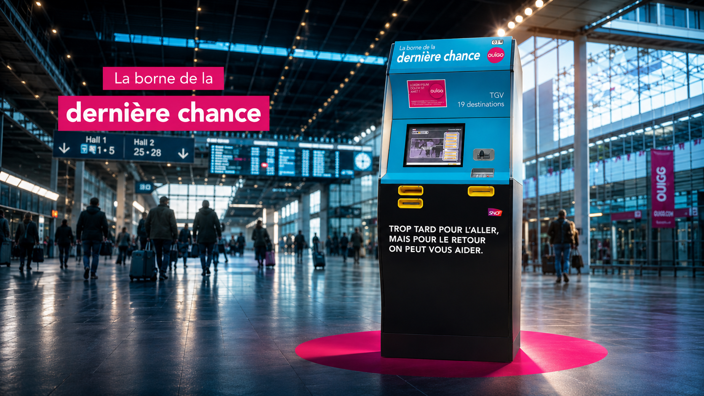

Ouigo - Activation — Fictive
Borne de la dernière chance
Prompt : Une activation qui cible les voyages en train et particulièrement les départs en vacances l’été.

...l
Nous avons réfléchi à une activation IRL autour des trajets des grandes vacances. Le jour des départs est toujours une journée infernale sur les routes de France avec la chaleur dans la voiture, les bouchons interminables, les enfants qui demandent quand est-ce qu’on arrive, l’envie de faire pipi alors qu’on vient de quitter l’aire d’autoroute… et le regret de ne pas être parti en train tout compte fait.
...l
Notre idée consiste à installer une borne d’achat de billets de train sur les aires d’autoroute entre Paris et Marseille (autoroute la plus fréquentée durant l’été) avec le message « Ok, c’est fichu pour l’aller, mais pas encore pour le retour ! » La borne donne la possibilité de faire le trajet retour en train sereinement et Ouigo se charge de ramener votre voiture.